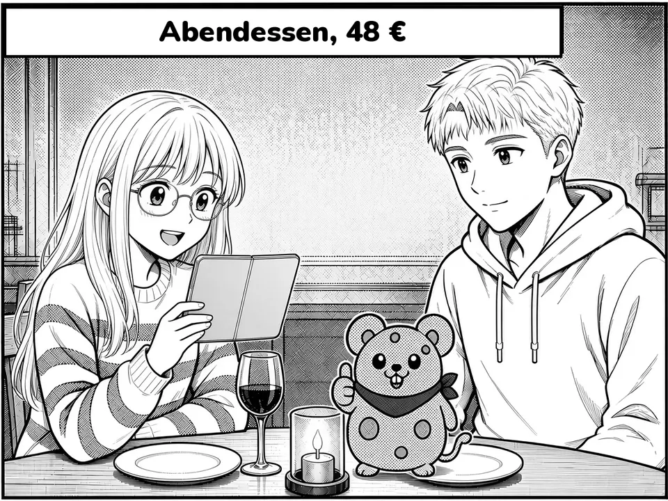
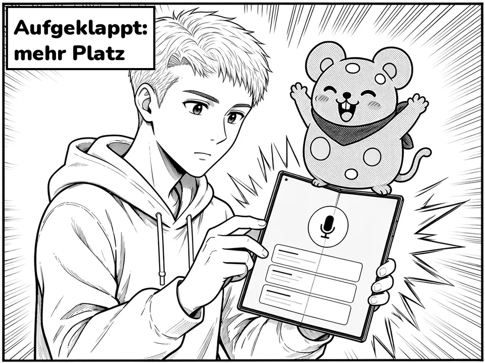

2 · Mäuse · Volume 1.52 · Mäuse · Band 1.5
Version 1.5.0
Band 1.5CONTENTS
-
Voice mode with on-device AI – freeSprachmodus mit lokaler KI – kostenlos
For every iPhone with Apple Intelligence. The AI runs on your iPhone – nothing leaves the device.Für jedes iPhone mit Apple Intelligence. Die KI läuft auf deinem iPhone – nichts verlässt das Gerät.
-
iPhone DuoiPhone Duo
Full support: unfolded, Mäuse uses the larger screen.Volle Unterstützung: Aufgeklappt nutzt Mäuse den größeren Bildschirm.
To be continued …
3 · Contents3 · Inhalt